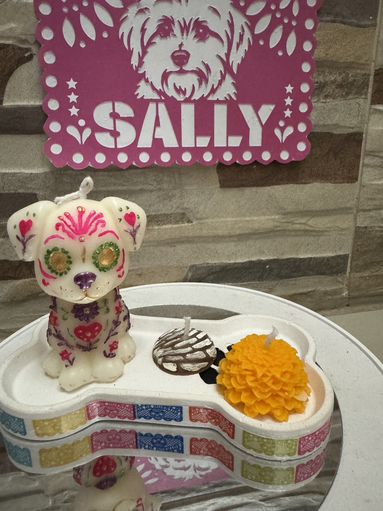
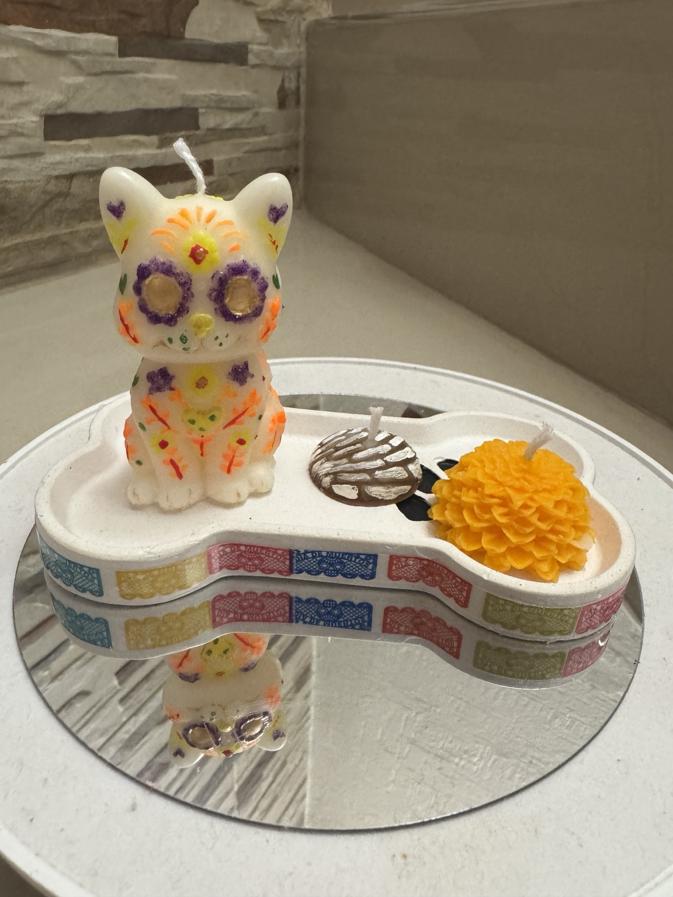
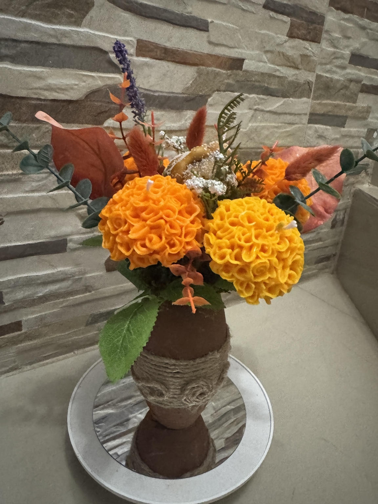

Una colección hecha para sentir
Hay aromas que saben volver a casa.
El chocolate caliente. El pan compartido. El color del cempasúchil. Aquella mascota que dejó huellitas para siempre. Un lugar en la mesa que, aunque hoy esté vacío, sigue lleno de recuerdos.
Esta colección nació de todo eso que permanece. Cada pieza está elaborada artesanalmente, una a una, para transformar nuestras tradiciones en pequeños instantes capaces de volver a sentirse.
En Ferval no hacemos solamente velas.
Creamos recuerdos que puedes mirar, encender, regalar y volver a sentir.
Creaciones con historia
Más que velas: escenas que cuentan algo.
Cada composición reúne aromas, texturas y símbolos para convertirse en un recuerdo completo.


Personalización Ferval
Hay recuerdos que tienen nombre. Y otros, incluso, tienen rostro.
Complementa tu creación con papel picado personalizado en cartulina de color, diseñado especialmente a partir de una foto y preparado para corte en Cricut.
Crea tu propia historia
Piezas individuales
Elige las piezas que conecten contigo para complementar tu ofrenda, crear tu propia composición o regalar un pequeño detalle hecho a mano.
*Precios individuales editables antes de publicar la versión final.

Hecho lento. Hecho a mano.
Lo especial también está en el proceso.
Ninguna pieza Ferval sale de una línea de producción. Cada vela se vierte, desmolda, detalla, pinta, monta y presenta artesanalmente.
Cuando eliges una creación Ferval, no compras únicamente cera, aroma o decoración. Te llevas diseño, tiempo, manos, historia y emoción.
Edición limitada 2026
Elige el recuerdo que quieres llevar contigo.
Confirma disponibilidad, personalizaciones y fecha de entrega directamente con Ferval.